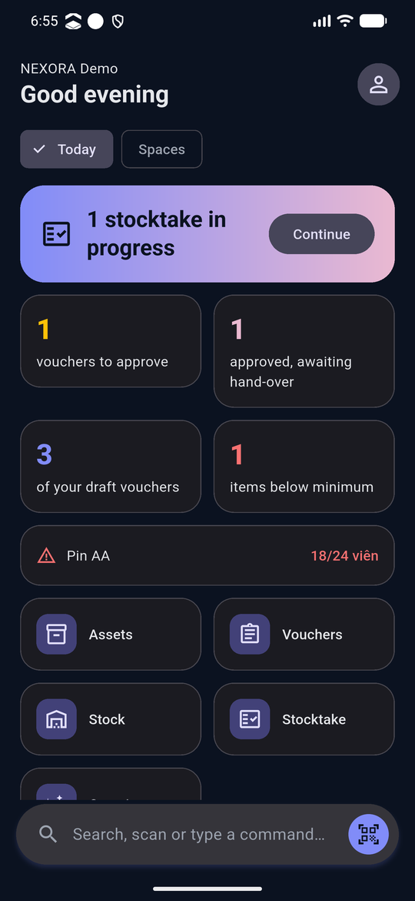
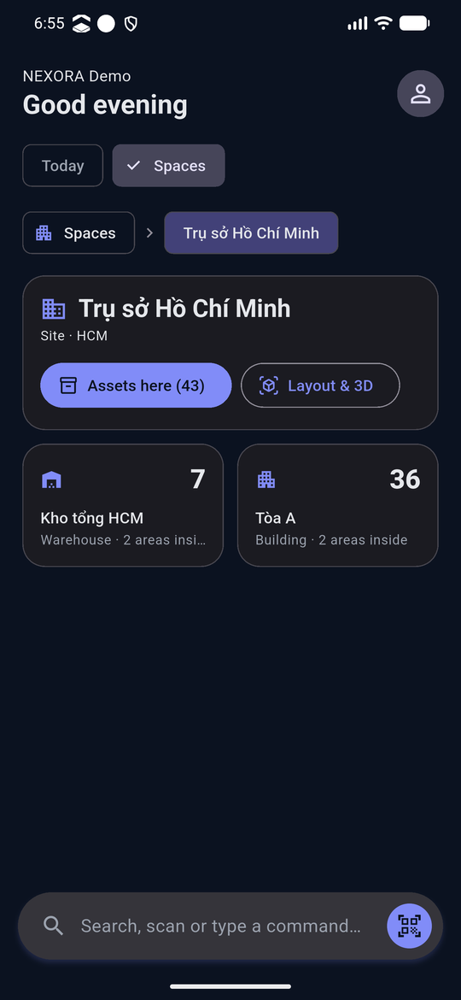
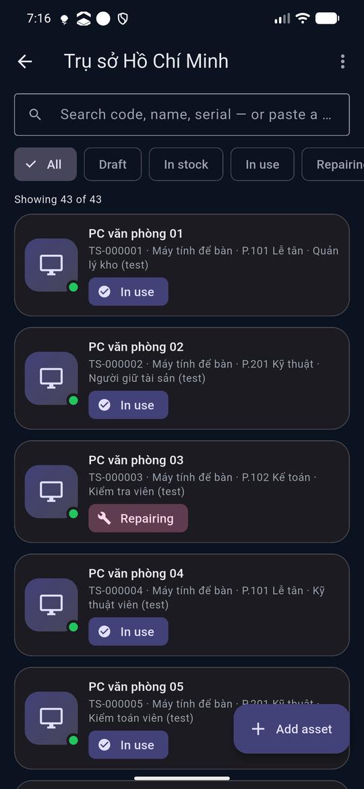
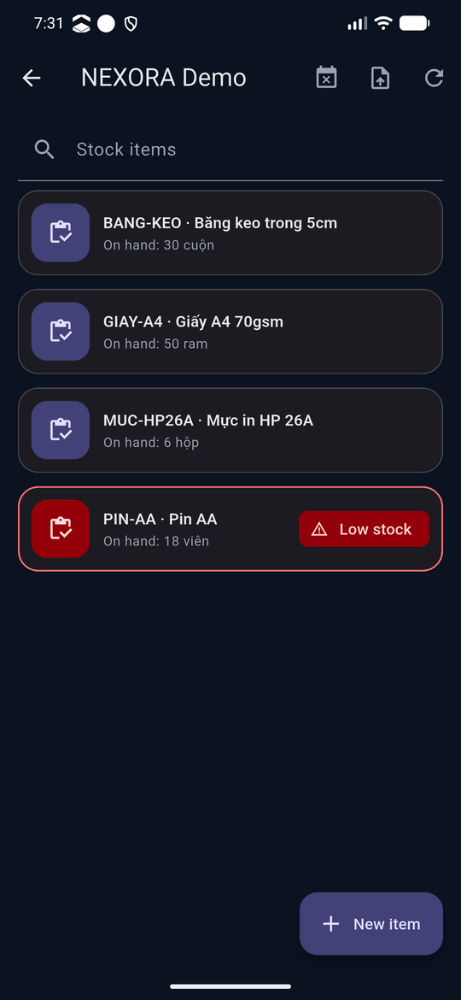
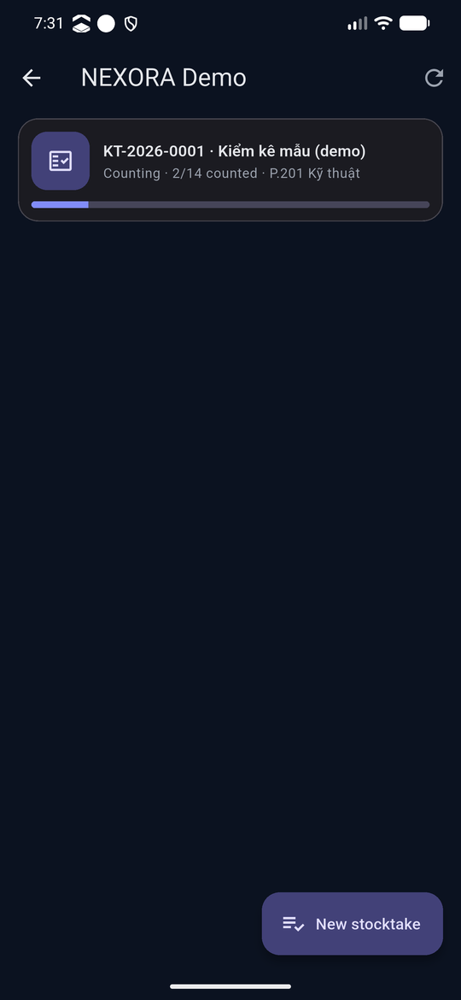

Có gì mới ở 0.3.0
- Có bản web: mở ngay trên trình duyệt, không cần cài. Dữ liệu đã xem vẫn đọc được khi mất mạng (lưu trong trình duyệt). Quét QR bằng camera trên Chrome, Edge, Safari 17+. Bản web chưa có xem 3D (vẫn có mặt bằng 2D).
Từ 0.2.0
- Giao diện mới, gọn hơn: không còn thanh 8 mục. Màn chính là các thẻ việc cần làm hôm nay, ô Tìm, quét hoặc gõ lệnh (Ctrl+K trên Windows) và duyệt Không gian theo tòa → tầng → phòng.
- Danh sách tài sản, phiếu, kho, kiểm kê dạng thẻ: chấm tình trạng, viền đỏ khi cần xử lý, thanh tiến độ kiểm kê, nút “Đã thấy” ngay trên thẻ.
- Windows màn rộng: cây không gian bên trái, việc của bạn bên phải.
- Logo và biểu tượng ứng dụng mới.
- Sửa lỗi: số tài sản theo khu, phiếu kho hiện số dòng vật tư, danh sách “Tất cả” không còn lẫn tài sản đã thanh lý.
Lưu ý Android: mã ứng dụng đổi thành com.mittohoa.nexora_app, nên bản 0.2.0 cài thành ứng dụng mới. Nếu đã cài bản 0.1.0, hãy gỡ bản cũ và đăng nhập lại ở bản mới.
Tính năng
Sổ tài sản + QR
Mã tài sản tự sinh, nhãn QR in được, vị trí theo cây (cơ sở → tòa → tầng → phòng), linh kiện lắp trong thiết bị, lịch sử đầy đủ.
Phiếu có duyệt
Cấp phát, thu hồi, điều chuyển; nhập / xuất / chuyển / điều chỉnh kho. Nháp → gửi → duyệt → hoàn tất, mọi bước đều được ghi vết.
Vật tư theo lô
Sổ cái chỉ ghi thêm, không âm kho, cảnh báo tồn thấp và lô sắp hết hạn, nhập tồn đầu kỳ từ Excel.
Kiểm kê
Quét QR bằng camera hoặc máy quét USB, đối chiếu tự động, tạo phiếu điều chuyển cho tài sản sai chỗ.
Ngoại tuyến
Xem dữ liệu, quét kiểm kê, soạn nháp và phiếu khi mất mạng; tự gửi khi có mạng, không bao giờ âm thầm bỏ thao tác.
3D
Thư viện mô hình GLB có phiên bản; bố trí tài sản trong phòng trên mặt bằng 2D và xem 3D đúng kích thước thật.
Nhập liệu nhanh
Nháp có nguồn gốc từng trường, dán cả bảng từ Excel, trường tùy biến theo loại, ảnh đính kèm.
Nhiều tổ chức, phân quyền
8 vai trò, dữ liệu tách biệt từng tổ chức; AI là tùy chọn và đang tắt mặc định.
Hình ảnh







Tải về
| Nền tảng | Tệp | Ghi chú |
|---|---|---|
| Android (điện thoại mới) | nexora-android-arm64.apk | Hầu hết điện thoại từ 2017 trở đi. Cho phép “cài ứng dụng không rõ nguồn” khi được hỏi. |
| Android (máy ảo / Chromebook x86) | nexora-android-x86_64.apk | Cho trình giả lập và máy x86_64. |
| Android (máy cũ, 32-bit) | nexora-android-armv7.apk | Nếu bản trên báo không tương thích. |
| Windows 10/11 (64-bit) | nexora-windows-x64.zip | Giải nén rồi chạy nexora_app.exe. Chưa ký mã nên Windows có thể cảnh báo SmartScreen. |
| Web | Mở bản web | Chrome, Edge, Safari, Firefox bản mới. Chưa có xem 3D; quét QR bằng camera trên Chrome, Edge, Safari 17+. |
Kiểm tra tệp: mỗi bản phát hành kèm mã SHA-256 trong phần ghi chú phát hành.